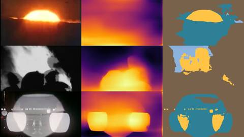
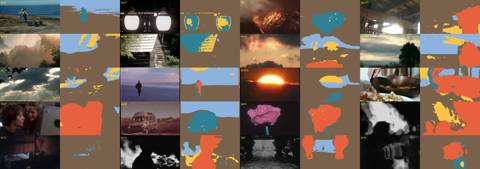
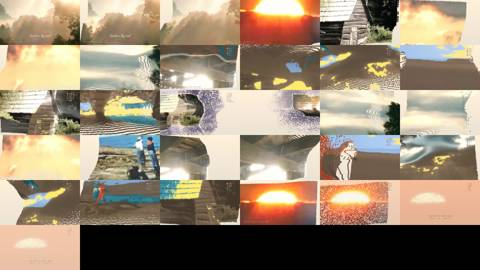

Afterlight / VI Semantic / AFL-23
VI · Semantic · AFL-23 of 25 · 2:03
Golden Record
The note that produced it
“Make the film for the best songs, exploring new videos like this.”
The genome sent with it, Semantic 3D Synthesis Pipeline: fuse monocular depth, semantic segmentation and neural radiance fields to project disparate 2D images into one labeled 3D point cloud; generate the missing volumes; enable programmatic, semantic editing of reality, e.g. “erase all modern cars from this 1920s street scene.”
What was made
Golden Record (88 bpm) cut bar for bar. A misty sunrise lifts from a flat frame into depth; sun, cabin, clouds and the sea are flown through and labeled; in the break the camera pulls back past the frame into the generated surround; at the end every point but the sun is removed and rises as embers.
MiDaS v2.1 small for depth · U2-Net human segmentation and U2-Net-P saliency, plus brightness rules, for five classes · about 32,000 points per frame, splatted far to near · the surround outside the frame generated from the frame’s own edges and labeled GENERATED · the final edit removes every class but SOURCE
What came back
The note on this version, which produced AFL-24 Carry the Glow:
“Make the film for the best songs, exploring new videos like this”, with the Semantic 3D Synthesis Pipeline genome: monocular depth and semantic segmentation, unprojected to a labeled point cloud, missing volumes generated, reality edited by class (“erase all modern cars from this 1920s street scene”).
Images made while working: contact sheets, check frames, spectrograms, the stills compared before and after a fix. Tap one to see it full size.






No separate critic agent was run on this cut. The critique came from the director, in the notes on either side of it.
On the cut before
“Make the film for the best songs, exploring new videos like this”, with the Semantic 3D Synthesis Pipeline genome: monocular depth and semantic segmentation, unprojected to a labeled point cloud, missing volumes generated, reality edited by class (“erase all modern cars from this 1920s street scene”).
On this cut
“Make the film for the best songs, exploring new videos like this”, with the Semantic 3D Synthesis Pipeline genome: monocular depth and semantic segmentation, unprojected to a labeled point cloud, missing volumes generated, reality edited by class (“erase all modern cars from this 1920s street scene”).
Files
The scripts that made this version, as plain text.
A film concept by Sosuke & Watson · CRASH LAB · PAELEO · CINEOSIS LAB